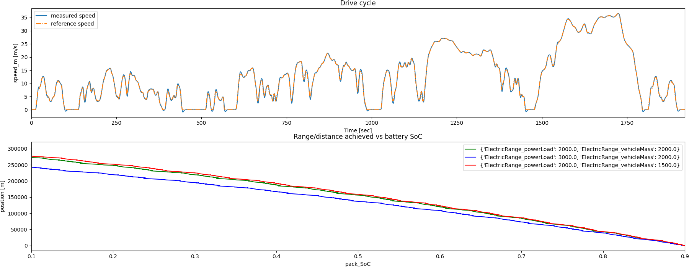

Note
Click here to download the full example code
Parametric dynamic Twin evaluation example#
This example shows how you can use PyTwin to load and evaluate a Twin model and simulate multiple parametric variations. The model is used for determining the range of an electric vehicle. The vehicle is represented by a battery, the electric loads of the vehicle, and an electric machine connected to a simple 1D chassis. The driver controls the vehicle speed to follow a repeated sequence of the WLTP cycle (class 3). The mass of the vehicle as well as the electric power loads are parameterized so that we can see their effects on the overall electric range

# sphinx_gallery_thumbnail_path = '_static/electricRange.png'
Perform required imports#
Perform required imports, which includes downloading and importing the input files
import matplotlib.pyplot as plt
import pandas as pd
from pytwin import TwinModel, download_file
twin_file = download_file("ElectricRange_23R1_other.twin", "twin_files")
Auxiliary functions definition#
Definition of plot_result_comparison for post-processing the results
def plot_result_comparison(results: list[pd.DataFrame], sweep: list[dict]):
"""Compare the results obtained from the different parametric simulations executed on the same TwinModel. The
results dataset are provided as Pandas Dataframe. The function will plot the different results for few particular
variables of interest"""
pd.set_option("display.precision", 12)
pd.set_option("display.max_columns", 20)
pd.set_option("display.expand_frame_repr", False)
color = ["g", "b", "r"]
# output ordering : time, battery_loss, loads_loss, machine_loss, pack_SoC, position, speed_m, speed_ref,
# tau_ref, tau_sns
x0_ind = 0
y0_ind = 6
z0_ind = 7
x1_ind = 4
y1_ind = 5
# Plotting the runtime outputs
# We will plot 2 different results : the drive cycle results as well as the distance
# achieved vs battery state of charge for all the parametric variations
fig, ax = plt.subplots(ncols=1, nrows=2, figsize=(18, 7))
fig.subplots_adjust(hspace=0.5)
fig.set_tight_layout({"pad": 0.0})
axes0 = ax[0]
results[0].plot(x=x0_ind, y=y0_ind, ax=axes0, label="{}".format("measured speed"))
results[0].plot(x=x0_ind, y=z0_ind, ax=axes0, ls="-.", label="{}".format("reference speed"))
axes0.set_title("Drive cycle")
axes0.set_xlabel(results[0].columns[x0_ind] + " [sec]")
axes0.set_ylabel(results[0].columns[y0_ind] + " [m/s]")
axes0.set_xlim((0, 32 * 60))
axes1 = ax[1]
for ind, dp in enumerate(sweep):
# Plot runtime results
results[ind].plot(x=x1_ind, y=y1_ind, ax=axes1, color=color[ind], label="{}".format(dp))
axes1.set_title("Range/distance achieved vs battery SoC")
axes1.set_xlabel(results[0].columns[x1_ind])
axes1.set_xlim((0.1, 0.9))
axes1.set_ylabel(results[0].columns[y1_ind] + " [m]")
# Show plot
plt.show()
Loading the Twin Runtime and instantiating it#
Loading the Twin Runtime and instantiating it.
Loading model: C:\Users\ansys\AppData\Local\Temp\TwinExamples\twin_files\ElectricRange_23R1_other.twin
User inputs#
Defining user inputs and simulation settings
time_step = 1.0
time_end = 24000.0 # simulating the model for 400 minutes
print("Twin parameters : {}".format(twin_model.parameters))
dp1 = {"ElectricRange_powerLoad": 2000.0, "ElectricRange_vehicleMass": 2000.0}
dp2 = {"ElectricRange_powerLoad": 3000.0, "ElectricRange_vehicleMass": 2000.0}
dp3 = {"ElectricRange_powerLoad": 2000.0, "ElectricRange_vehicleMass": 1500.0}
sweep = [dp1, dp2, dp3]
Twin parameters : {'ElectricRange_powerLoad': 2000.0, 'ElectricRange_vehicleMass': 2000.0}
Parametric sweep over the different design points#
Simulating the Twin for each set of parameters values, one time step at a time and collecting corresponding outputs
results = []
for dp in sweep:
# Twin initialization with the right parameters values and collection of initial outputs values
twin_model.initialize_evaluation(parameters=dp)
outputs = [twin_model.evaluation_time]
for item in twin_model.outputs:
outputs.append(twin_model.outputs[item])
sim_output = [outputs]
while twin_model.evaluation_time < time_end:
step = time_step
twin_model.evaluate_step_by_step(step_size=step)
outputs = [twin_model.evaluation_time]
for item in twin_model.outputs:
outputs.append(twin_model.outputs[item])
sim_output.append(outputs)
if twin_model.evaluation_time % 1000 == 0.0:
print(
"Simulating the model with parameters {}, evaluation time = {}".format(dp, twin_model.evaluation_time)
)
sim_results = pd.DataFrame(sim_output, columns=["Time"] + list(twin_model.outputs), dtype=float)
results.append(sim_results)
Simulating the model with parameters {'ElectricRange_powerLoad': 2000.0, 'ElectricRange_vehicleMass': 2000.0}, evaluation time = 1000.0
Simulating the model with parameters {'ElectricRange_powerLoad': 2000.0, 'ElectricRange_vehicleMass': 2000.0}, evaluation time = 2000.0
Simulating the model with parameters {'ElectricRange_powerLoad': 2000.0, 'ElectricRange_vehicleMass': 2000.0}, evaluation time = 3000.0
Simulating the model with parameters {'ElectricRange_powerLoad': 2000.0, 'ElectricRange_vehicleMass': 2000.0}, evaluation time = 4000.0
Simulating the model with parameters {'ElectricRange_powerLoad': 2000.0, 'ElectricRange_vehicleMass': 2000.0}, evaluation time = 5000.0
Simulating the model with parameters {'ElectricRange_powerLoad': 2000.0, 'ElectricRange_vehicleMass': 2000.0}, evaluation time = 6000.0
Simulating the model with parameters {'ElectricRange_powerLoad': 2000.0, 'ElectricRange_vehicleMass': 2000.0}, evaluation time = 7000.0
Simulating the model with parameters {'ElectricRange_powerLoad': 2000.0, 'ElectricRange_vehicleMass': 2000.0}, evaluation time = 8000.0
Simulating the model with parameters {'ElectricRange_powerLoad': 2000.0, 'ElectricRange_vehicleMass': 2000.0}, evaluation time = 9000.0
Simulating the model with parameters {'ElectricRange_powerLoad': 2000.0, 'ElectricRange_vehicleMass': 2000.0}, evaluation time = 10000.0
Simulating the model with parameters {'ElectricRange_powerLoad': 2000.0, 'ElectricRange_vehicleMass': 2000.0}, evaluation time = 11000.0
Simulating the model with parameters {'ElectricRange_powerLoad': 2000.0, 'ElectricRange_vehicleMass': 2000.0}, evaluation time = 12000.0
Simulating the model with parameters {'ElectricRange_powerLoad': 2000.0, 'ElectricRange_vehicleMass': 2000.0}, evaluation time = 13000.0
Simulating the model with parameters {'ElectricRange_powerLoad': 2000.0, 'ElectricRange_vehicleMass': 2000.0}, evaluation time = 14000.0
Simulating the model with parameters {'ElectricRange_powerLoad': 2000.0, 'ElectricRange_vehicleMass': 2000.0}, evaluation time = 15000.0
Simulating the model with parameters {'ElectricRange_powerLoad': 2000.0, 'ElectricRange_vehicleMass': 2000.0}, evaluation time = 16000.0
Simulating the model with parameters {'ElectricRange_powerLoad': 2000.0, 'ElectricRange_vehicleMass': 2000.0}, evaluation time = 17000.0
Simulating the model with parameters {'ElectricRange_powerLoad': 2000.0, 'ElectricRange_vehicleMass': 2000.0}, evaluation time = 18000.0
Simulating the model with parameters {'ElectricRange_powerLoad': 2000.0, 'ElectricRange_vehicleMass': 2000.0}, evaluation time = 19000.0
Simulating the model with parameters {'ElectricRange_powerLoad': 2000.0, 'ElectricRange_vehicleMass': 2000.0}, evaluation time = 20000.0
Simulating the model with parameters {'ElectricRange_powerLoad': 2000.0, 'ElectricRange_vehicleMass': 2000.0}, evaluation time = 21000.0
Simulating the model with parameters {'ElectricRange_powerLoad': 2000.0, 'ElectricRange_vehicleMass': 2000.0}, evaluation time = 22000.0
Simulating the model with parameters {'ElectricRange_powerLoad': 2000.0, 'ElectricRange_vehicleMass': 2000.0}, evaluation time = 23000.0
Simulating the model with parameters {'ElectricRange_powerLoad': 2000.0, 'ElectricRange_vehicleMass': 2000.0}, evaluation time = 24000.0
Simulating the model with parameters {'ElectricRange_powerLoad': 3000.0, 'ElectricRange_vehicleMass': 2000.0}, evaluation time = 1000.0
Simulating the model with parameters {'ElectricRange_powerLoad': 3000.0, 'ElectricRange_vehicleMass': 2000.0}, evaluation time = 2000.0
Simulating the model with parameters {'ElectricRange_powerLoad': 3000.0, 'ElectricRange_vehicleMass': 2000.0}, evaluation time = 3000.0
Simulating the model with parameters {'ElectricRange_powerLoad': 3000.0, 'ElectricRange_vehicleMass': 2000.0}, evaluation time = 4000.0
Simulating the model with parameters {'ElectricRange_powerLoad': 3000.0, 'ElectricRange_vehicleMass': 2000.0}, evaluation time = 5000.0
Simulating the model with parameters {'ElectricRange_powerLoad': 3000.0, 'ElectricRange_vehicleMass': 2000.0}, evaluation time = 6000.0
Simulating the model with parameters {'ElectricRange_powerLoad': 3000.0, 'ElectricRange_vehicleMass': 2000.0}, evaluation time = 7000.0
Simulating the model with parameters {'ElectricRange_powerLoad': 3000.0, 'ElectricRange_vehicleMass': 2000.0}, evaluation time = 8000.0
Simulating the model with parameters {'ElectricRange_powerLoad': 3000.0, 'ElectricRange_vehicleMass': 2000.0}, evaluation time = 9000.0
Simulating the model with parameters {'ElectricRange_powerLoad': 3000.0, 'ElectricRange_vehicleMass': 2000.0}, evaluation time = 10000.0
Simulating the model with parameters {'ElectricRange_powerLoad': 3000.0, 'ElectricRange_vehicleMass': 2000.0}, evaluation time = 11000.0
Simulating the model with parameters {'ElectricRange_powerLoad': 3000.0, 'ElectricRange_vehicleMass': 2000.0}, evaluation time = 12000.0
Simulating the model with parameters {'ElectricRange_powerLoad': 3000.0, 'ElectricRange_vehicleMass': 2000.0}, evaluation time = 13000.0
Simulating the model with parameters {'ElectricRange_powerLoad': 3000.0, 'ElectricRange_vehicleMass': 2000.0}, evaluation time = 14000.0
Simulating the model with parameters {'ElectricRange_powerLoad': 3000.0, 'ElectricRange_vehicleMass': 2000.0}, evaluation time = 15000.0
Simulating the model with parameters {'ElectricRange_powerLoad': 3000.0, 'ElectricRange_vehicleMass': 2000.0}, evaluation time = 16000.0
Simulating the model with parameters {'ElectricRange_powerLoad': 3000.0, 'ElectricRange_vehicleMass': 2000.0}, evaluation time = 17000.0
Simulating the model with parameters {'ElectricRange_powerLoad': 3000.0, 'ElectricRange_vehicleMass': 2000.0}, evaluation time = 18000.0
Simulating the model with parameters {'ElectricRange_powerLoad': 3000.0, 'ElectricRange_vehicleMass': 2000.0}, evaluation time = 19000.0
Simulating the model with parameters {'ElectricRange_powerLoad': 3000.0, 'ElectricRange_vehicleMass': 2000.0}, evaluation time = 20000.0
Simulating the model with parameters {'ElectricRange_powerLoad': 3000.0, 'ElectricRange_vehicleMass': 2000.0}, evaluation time = 21000.0
Simulating the model with parameters {'ElectricRange_powerLoad': 3000.0, 'ElectricRange_vehicleMass': 2000.0}, evaluation time = 22000.0
Simulating the model with parameters {'ElectricRange_powerLoad': 3000.0, 'ElectricRange_vehicleMass': 2000.0}, evaluation time = 23000.0
Simulating the model with parameters {'ElectricRange_powerLoad': 3000.0, 'ElectricRange_vehicleMass': 2000.0}, evaluation time = 24000.0
Simulating the model with parameters {'ElectricRange_powerLoad': 2000.0, 'ElectricRange_vehicleMass': 1500.0}, evaluation time = 1000.0
Simulating the model with parameters {'ElectricRange_powerLoad': 2000.0, 'ElectricRange_vehicleMass': 1500.0}, evaluation time = 2000.0
Simulating the model with parameters {'ElectricRange_powerLoad': 2000.0, 'ElectricRange_vehicleMass': 1500.0}, evaluation time = 3000.0
Simulating the model with parameters {'ElectricRange_powerLoad': 2000.0, 'ElectricRange_vehicleMass': 1500.0}, evaluation time = 4000.0
Simulating the model with parameters {'ElectricRange_powerLoad': 2000.0, 'ElectricRange_vehicleMass': 1500.0}, evaluation time = 5000.0
Simulating the model with parameters {'ElectricRange_powerLoad': 2000.0, 'ElectricRange_vehicleMass': 1500.0}, evaluation time = 6000.0
Simulating the model with parameters {'ElectricRange_powerLoad': 2000.0, 'ElectricRange_vehicleMass': 1500.0}, evaluation time = 7000.0
Simulating the model with parameters {'ElectricRange_powerLoad': 2000.0, 'ElectricRange_vehicleMass': 1500.0}, evaluation time = 8000.0
Simulating the model with parameters {'ElectricRange_powerLoad': 2000.0, 'ElectricRange_vehicleMass': 1500.0}, evaluation time = 9000.0
Simulating the model with parameters {'ElectricRange_powerLoad': 2000.0, 'ElectricRange_vehicleMass': 1500.0}, evaluation time = 10000.0
Simulating the model with parameters {'ElectricRange_powerLoad': 2000.0, 'ElectricRange_vehicleMass': 1500.0}, evaluation time = 11000.0
Simulating the model with parameters {'ElectricRange_powerLoad': 2000.0, 'ElectricRange_vehicleMass': 1500.0}, evaluation time = 12000.0
Simulating the model with parameters {'ElectricRange_powerLoad': 2000.0, 'ElectricRange_vehicleMass': 1500.0}, evaluation time = 13000.0
Simulating the model with parameters {'ElectricRange_powerLoad': 2000.0, 'ElectricRange_vehicleMass': 1500.0}, evaluation time = 14000.0
Simulating the model with parameters {'ElectricRange_powerLoad': 2000.0, 'ElectricRange_vehicleMass': 1500.0}, evaluation time = 15000.0
Simulating the model with parameters {'ElectricRange_powerLoad': 2000.0, 'ElectricRange_vehicleMass': 1500.0}, evaluation time = 16000.0
Simulating the model with parameters {'ElectricRange_powerLoad': 2000.0, 'ElectricRange_vehicleMass': 1500.0}, evaluation time = 17000.0
Simulating the model with parameters {'ElectricRange_powerLoad': 2000.0, 'ElectricRange_vehicleMass': 1500.0}, evaluation time = 18000.0
Simulating the model with parameters {'ElectricRange_powerLoad': 2000.0, 'ElectricRange_vehicleMass': 1500.0}, evaluation time = 19000.0
Simulating the model with parameters {'ElectricRange_powerLoad': 2000.0, 'ElectricRange_vehicleMass': 1500.0}, evaluation time = 20000.0
Simulating the model with parameters {'ElectricRange_powerLoad': 2000.0, 'ElectricRange_vehicleMass': 1500.0}, evaluation time = 21000.0
Simulating the model with parameters {'ElectricRange_powerLoad': 2000.0, 'ElectricRange_vehicleMass': 1500.0}, evaluation time = 22000.0
Simulating the model with parameters {'ElectricRange_powerLoad': 2000.0, 'ElectricRange_vehicleMass': 1500.0}, evaluation time = 23000.0
Simulating the model with parameters {'ElectricRange_powerLoad': 2000.0, 'ElectricRange_vehicleMass': 1500.0}, evaluation time = 24000.0
Post processing#
Plotting the different results and saving the image on disk
Total running time of the script: ( 1 minutes 6.735 seconds)